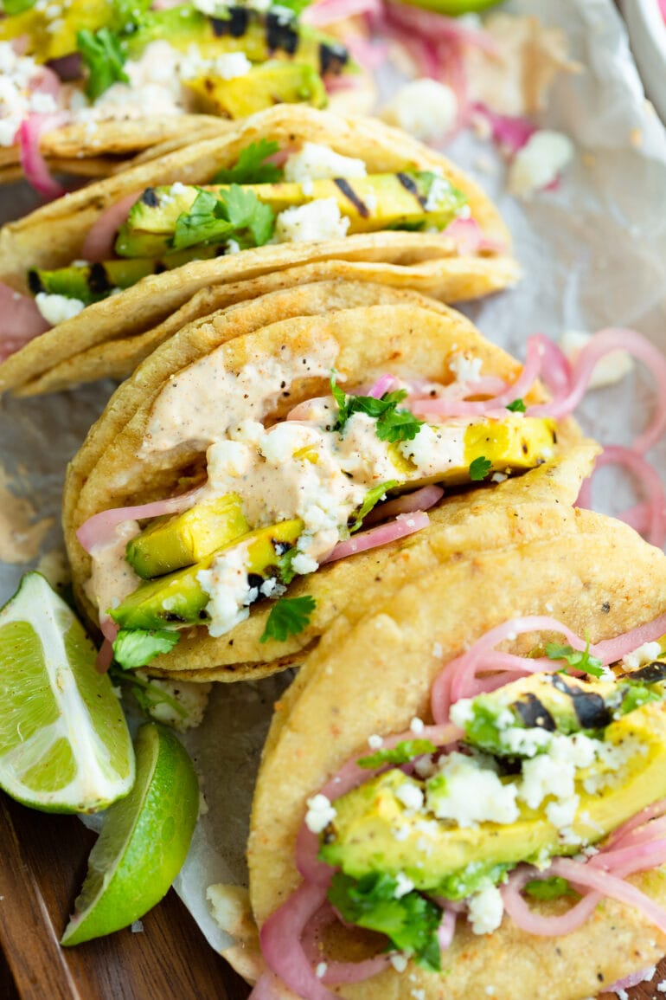

Grilled Avocado Tacos

Description
A classic light vegetarian option thatthat can be a quick week night option or can add variety to your taco night.
Ingredients
For the Tacos
- 5 Corn Tortillas
- 1 Avocado (ripe but firm)
- Salt and Pepepr
- Olive Oil
- Queso Fresco cheese, crumbled
- 1 lime, cut in wedges
- Pickled Red Onions
For the Crema
- 1/3 Cup Cream, or sour cream
- 1/4 Cup Mayo
- 1/2 Lime, juiced
- 3/4 teaspoon Chili Powder
- 1/4 teaspoon Smoked Paprika
Preperation
For the Avocado
- Heat a grill to medium high heat.
- Cut open the avocado and remove the pit. Do not remove from the peel yet.
- Brush each open face with olive oil, and sprinkle with salt and pepper.
- Place inside down on the grill and cook for 2-5 minutes or until grill marks have appeared.
- Remove from the grill using tongs and allow to cool while you proceed.
- Place each tortilla on the grill and grill each side for a few seconds, flip, and cook again, until grill marks begin to form and the tortilla puffs slightly.
- Remove from the grill and set on a plate.
For the Crema
Whisk all the ingredients in a small bowl and set aside.
To Assemble
- Slice the avocado in 1/8 inch slices lengthwise, remove from the peel, and layer a few slices in each tortilla with a little cheese, some pickled onions, and some lime crema and a squirt or two of lime juice.
- Enjoy!
Home